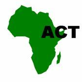

{kind=link}
Introduction
What is conservation agriculture?
Conservation agriculture (CA) aims to produce high crop yields while reducing production costs, maintaining the soil fertility and conserving water. It is a way to achieve sustainable agriculture and improve livelihoods.
Conservation agriculture has three basic principles:
To gain the full benefit of conservation agriculture, all three principles have to be applied at the same time. This ideal is not possible everywhere, but farmers should try to go into that direction as far as possible.
History of conservation agriculture
In the 1930s, soil erosion in the United States reached crisis proportions. The problem was particularly severe in the Midwest, where millions of tons of topsoil were blown away by the wind or washed into rivers, in what came to be known as the 'Great Dust Bowl'. Supported by the government, American farmers started abandoning their traditional practice of ploughing. Instead, they left the crop residues on the soil surface, and planted the next crop directly into the stubble. Faced with similar problems, farmers in South America also took up conservation agriculture. They sowed cover crops to protect the soil, and rotated crops in order to maintain soil fertility. Because of the benefits, knowledge passed quickly from farmer to farmer.
By the year 2000, conservation agriculture was practised on about 60 million hectares of land worldwide, mainly in North and South America. Government support has been important: in some states in Brazil, conservation agriculture is official policy. In Central America, Costa Rica's Ministry of Agriculture has a Department for Conservation Agriculture. Conservation agriculture is used to cultivate over half the crop land in Paraguay, about one-third of the land in Argentina, one-third in Brazil, and one-sixth in the United States.
The many South American conservation agriculturists are well organized in local and national farmers' associations. They are supported by institutions from North and South America and have links with international agencies such as FAO, GTZ and the World Bank. This support is essential to help farmers to adopt quickly new approaches and technologies that many see as a radical change in the way they farm.
Green Revolution vs No-till or Reduced-till Revolution
The Green Revolution did not provide adequate benefits to resource poor vulnerable farmers without access to external inputs namely fertilizers, hybrid seeds and water. In contrast, Conservation Agriculture can and is beginning to benefit all farmers and communities at large. CA is a silent multi-stakeholder movement driven by an urge to produce more food at less cost, conserve land and water resources and improve environmental quality. Thus CA easily conforms to as an important component of the strategy for food security, poverty alleviation, rural development, enhance productivity, improve environmental quality and help preserve natural resources at the same time.
Conservation agriculture in Africa
Conservation agriculture has great potential in Africa because it can control erosion, produce stable yields, and reduce labour needs.
The story of conservation agriculture in Africa is not new. Across wide areas of Africa, conservation agriculture principles used to be normal practice, before ploughs were introduced. Farmers would cultivate by hand, often with hoes, rotating crops and fallowing fields for several years. Rising populations and ploughs changed all that. European settlers and colonial regimes introduced ploughs, and they quickly came to dominate farming because they enabled farmers to open up more land quickly and cheaply. But just as in the United States, the plough has gradually eroded Africa's soils. Fertility and yields have fallen, and many countries now face critical food shortages. But not all Africa's farmland was put to the plough, or to the deep-till hoe, and pockets of conservation-friendly farming still remain.
Conservation agriculture emerged in several different places around the same time in Africa. The most dramatic story comes from Zimbabwe and Zambia, where conservation agriculture came to the rescue of the land. Starting on one large-scale commercial estate in Zimbabwe, a combination of zero-tillage and direct planting into deep straw mulch meant a slow but sure recovery for de- graded land. A moderate use of herbicides was needed to kill weeds. By the mid 1990s, nearly 4000 hectares were under conservation agriculture - all on large-scale farms. Efforts are presently being made to transfer this success to some of the many new small-scale farmers in Zimbabwe.
In Zambia around the same time, a dedicated extension unit, supported by donor funds, spread the message. Here, small-scale farmers found that conservation agriculture worked on their farms too. Currently more than 100,000 small-scale farmers in Zambia have converted to conservation agriculture.
Large-scale farmers in Kenya, South Africa and Namibia also use conservation agriculture practices. In South Africa, no-till farmers' clubs similar to those in South America have been set up. Initiatives by government research and extension agencies, donors and the private sector promote conservation agriculture for smallholder farmers in Cameroon, Ghana, Kenya, Madagascar, Malawi, Namibia, Tanzania, Uganda, Zambia, Zimbabwe, and other countries. Various institutions conduct research on or promote conservation agriculture.
The most important researchers and promoters of conservation agriculture in Africa are farmers themselves. Every farmer is a researcher, who experiments every season on his or her farm. Farmers who find something that works are likely to repeat it the next season, and to tell their friends about it.
Sustainable land management
Sustainable land management (or "land husbandry") is a broad term that includes various types of crop and livestock production that aim to produce good yields year after year, while conserving soil and water resources. It does not necessarily include all three principles of conservation agriculture (don't turn the soil, keep the soil covered, and rotate crops). Conservation agriculture is a type of sustainable land management.
Agroforestry
Agroforestry is a combination of trees and crops (or livestock), and is a form of 'sustainable land management'. Agroforestry promotes soil cover and crop rotation, so may contribute to a conservation agriculture system.
For more information on agroforestry
Why start using conservation agriculture?
You might start using conservation agriculture for many reasons.
- To improve your yields
Unlike the rest of the developing world, crop production in Africa is not keeping pace with population growth. Yields in many areas are actually falling. A major cause of this is declining soil fertility, often caused by the way of farming. The rising population has forced farmers to abandon traditional practices that left the land fallow for several years, and to cultivate ever-smaller plots. Intensive tilling and hoeing year after year can produce a hardpan in the soil. That restricts root growth and stunts plants. Rainwater pounds the bare soil, forming a surface crust that the water cannot penetrate. It runs off, taking the valuable topsoil with it. Erosion in some places is so severe that there is little soil left.
To get a good yield, farmers often apply more and more fertilizer. With less moisture in the soil, plants are more vulnerable to drought. They start to wilt after a few days without rain.
Conservation agriculture enables farmers to reverse this trend. It prevents hardpans from forming, protects the soil, increases soil moisture, and restores soil fertility, so stabilizing yields and improving production over the long term.
- To reduce your production costs
Tilling the soil is expensive. Fuel and fertilizer prices and labour costs rise continuously, while market prices of farm products have fallen. Many farmers cannot recoup their production costs by selling what they produce, so they end up making a loss.
Conservation agriculture helps these farmers cut costs while increasing their yields.
- To overcome shortages of labour and farm power
Many farm households suffer from a severe lack of labour and farm power. Hunger and malnutrition combine to make people weak, unable to work hard, and vulnerable to disease. Young people are moving out, and HIV/AIDS and malaria create a severe labour shortage. Many draught animals have died because of disease, or their owners have had to sell them to pay for medical treatment and burials. A lack of farm power forces farmers to look for other ways to farm.
Conventional vs conservation agriculture
Both conventional farming and conservation agriculture include a very wide range of operations: field preparation, planting, fertilization, weeding, harvesting, and field operations after the harvest. There are, of course, many variations in both 'conventional' and 'conservation' approaches, so the descriptions are simplified and may not depict what happens in a particular area.
Conservation agriculture means less work because it is not necessary to plough the soil and weed as many times. It suppresses weeds and reduces erosion. It improves the soil structure, ability to retain water, organicmatter content and fertility. All these lead to higher and more stable yields.
Organic vs conservation agriculture
Organic farming involves growing crops and livestock without using agrochemicals. It is possible to do conservation agriculture in an organic way (without using fertilizers, herbicides or pesticides), but many types of conservation agriculture use these agrochemicals - but in small amounts and with care.
Advocacy of crop rotations to break disease and pest cycles are very complimentary for both organic and conservation agriculture. While conservation agriculture stresses on zero or reduced tillage and maintenance of soil cover, seems not bound by these factors.
For more information on organic farming
How does conservation agriculture work in different types of farms?
The three principles of conservation agriculture (disturb the soil as little as possible, keep the soil covered as much as possible, and mix and rotate crops) can be applied in a wide range of conditions. How farmers put them into practice will vary from place to place, depending on many factors.
Conservation agriculture can be practised on different types of farms, with different combinations of crops and sources of power. Here are some examples:
- Hoe farming
Many African farmers cultivate by hand, using hoes. These farmers can practise conservation agriculture by digging small planting holes in lines, at carefully measured distances, leaving the rest of the soil unturned. If hoeing in previous years has produced a hardpan, the holes must be deep enough to break through this hard layer.
The farmers can put compost or manure in the holes to raise the soil fertility and the water-holding capacity, then sow maize or beans. They can sow cover crops between the planting holes to protect the soil from erosion and to suppress weeds. They can pull weeds out by hand, or slash them with a machete.
The next season, they can plant different crops in the same holes. It is not necessary to dig through the hardpan again, because the first season?s crop roots will have penetrated deep into the soil and will help water to seep into the soil. So it is necessary to do hard work of digging the pits only once.
- Small holder farming with draught animals
Farmers who own (or can hire) oxen or donkeys to pull implements can use a different set of conservation agriculture practices. They can use a subsoiler to break up the hardpan (if there is one). This is usually necessary only in the first year.
If there is no hardpan, the farmers can use an animal-drawn ripper to open up a narrow furrow for planting seed. The soil between these furrows is left alone. It is possible to use rippers and subsoilers that sow seeds and apply fertilizer at the same time, so saving time and work. Before planting the crop, the farmers can use a hoe or knife-roller to kill weeds, or apply herbicide using a sprayer or wiper. They sow a cover crop with the maize crop to smother weeds and to reduce evaporation from the soil surface. When harvesting the main crop, the farmers leave the residues and cover crop on the field. That protects the soil from the sun and rain, and further controls weeds.
- Mechanized farms
Farmers with tractors can use conservation agriculture too. They can replace their mouldboard ploughs, disks and harrows with rippers, subsoilers and direct-drill planters.
At the outset of the season, large scale farmers use a knife roller, sometimes in combination with herbicides, to kill the previous season's cover crop and weeds. In the first season of conservation agriculture, they may need to use a subsoiler to break up ploughpan. They then use a direct drill-drill planter to sow seeds. A post emergence herbicide kills any weeds that come up after planting and before the crop canopy can cover the surface.
After harvest, the crop residues stay in the field. The farmer then sows a cover crop to protect the soil until the next planting season.
Many farmers are able to use a combination of implements and different types of power. For example, a hoe farmer may be able to hire a neighbour with a tractor to subsoil her field. She can then choose among various options so she gets the full benefits of conservation agriculture.
Different situations
Conservation agriculture can be used in all parts of Africa, except where it is too dry to grow crops. It can be applied in various climatic zones and under different conditions, though it may look very different from place to place.
- In semi-arid lands, conservation agriculture retains water in the soil, keeps the soil temperature even, and protects the land from erosion during heavy downpours. Maintaining soil moisture is the main challenge in these areas, so rainwater harvesting methods can be very useful to increase the amount of water available for crops. Crops may be planted with wide spacing, and there may not be enough moisture to grow a cover crop, so farmers may have to rely on mulch or residue to keep the soil covered. Livestock are important in these areas. Farmers may have to restrict grazing on their fields to keep as much soil cover as possible.
- In sub-humid and humid areas, weeds and erosion are likely to be more of a problem. Crops are planted at closer spacings, and cover crops help suppress weeds and protect the soil.
- On slopes, conservation agriculture can be used in association with terraces, contour grass strips and other erosion-control methods. Terraces already exist in many places; conservation agriculture can be used on them.
- Where labour is scarce, perhaps because of HIV/AIDS, conservation agriculture enables farmers to produce good yields with less labour.
- In densely populated areas, conservation agriculture increases yields on small plots of land under intensive cultivation.
- On good soils, conservation agriculture keeps the soil healthy and maintains yields. On poor soils, it is a good way to rebuild soil fertility and enhance water-holding capacity, so increasing production.
Challenges for conservation agriculture
Conservation agriculture has the potential to change the face of Africa. But its success is not automatic. It faces various challenges.
Change of mindset
Switching to conservation agriculture involves a fundamental change of mindset. For example, farmers must drop their traditional practice of preparing the land with a hoe or plough, and instead rely on "biological tillage" by the plant roots and earthworms. The switch also encourages farmers to begin to see their farms as a business rather than merely a way to feed their families.
Conservation agriculture involves radical changes in what extension services do. An effective way to promote conservation agriculture is through farmer field schools and other approaches that put farmers and their needs at the centre, rather than seeing them as mere recipients of advice. Such revolutionary changes require teaching, not only on the farm itself but also within schools and colleges. Extension staff will need intensive training so they can learn the necessary technologies. Field demonstrations and awareness-creation campaigns will also be needed. The mass media must be harnessed to support the campaign.
Crop residues
Keeping the soil covered is important in conservation agriculture. But it can be difficult. Farmers have many uses for crop residues: as fodder, fencing, roofing and fuel. Livestock keepers let their animals graze on stubble. In drier areas, it is impossible to grow a cover crop in the dry season, and crop residues are a vital source of animal feed.
If they are to keep the soil covered, farmers will have to protect their fields and find alternative sources of fuel and fodder. In wetter, sparsely populated areas, this is easy. In drier areas, it is more difficult. Alternatives include fencing animals out, reaching agreements with livestock owners on grazing rights, and growing special plots of fodder and fuelwood.
Land tenure
Farmers can go a long way towards adopting the principles of conservation agriculture with a minimum of investment on their farms. But they may be reluctant to do so if they do not have clear rights to the land they cultivate.
The importance, however, of the land tenure issue varies widely throughout Africa. In some countries, lack of guaranteed tenure impedes all agricultural development.
Adaptation of the "Brazilian" CA to take advantage of indigenous knowledge and different agro-ecological conditions is a process which is uncomfortably long.
Other challenges:
It can be hard to find seed (particularly of cover crops), inputs such as herbicides, and equipment. Crops such as tef, which has very small seeds, can be difficult to sow without disturbing the soil. And for various reasons, it can be difficult for farmers to work in groups, form organizations or get the support they need to begin practising conservation agriculture.
Conservation Agriculture and the African Conservation Tillage Network (ACT)
|  |
Agricultural growth will play a decisive role in efforts to improve the welfare of the vast majority of Africa's populations. Over half of the continent's populations live in rural areas, and over 60% of Sub-Sahara Africa's populations live off some form of direct exploitation of natural resources, largely through subsistence agriculture. Reductions in the number of increasingly poor people, of the 30% of chronically hungry Africans and vulnerability, therefore, shall depend crucially on sustained and broad-based agricultural growth. This will also lay the foundation for sustainable socio-economic growth.
Long-term agricultural production trends in Africa have proven disappointing. Africa remains the only region in the world where per capita food production has declined by 13% over the last 35 years. Twenty percent of the natural resource base suffers from water and wind erosion and 70% from moisture stress. Soil fertility is ranked the single, most important food security constraint.
The "Green Revolution" considered by many to be a success story has not only amplified the social inequities, but the resultant deceiving cheap food is not always healthy and costs a fortune in terms of water, soil and biological diversity on which the future of not only the beneficiaries but all of us depends. Rising world food prices combined with the high costs of energy for transportation pose new opportunities but are simultaneously a catastrophe for the majority who are unable cope. A new paradigm of "producing locally for local consumption is probably in the making".
Conservation agriculture (CA) has the potential to enhance food security through increased and stabilised productivity and sustainable land management (SLM). Building on indigenous, scientific knowledge and innovative equipment designs from Brazil CA is spreading in Africa. More than 14 countries are now practicing the technology. Practicing farmers are able to produce more food more reliably using same rates of fertilizers and using much less labour (up to 50%). Action is needed now to get this promising technology adopted by as many farmers as is possible. But, there are serious challenges to be overcome to make this viable. Experiences of the African Conservation Tillage (ACT) in Enhancing Access to CA Knowledge & Information and Partnerships are summaries in the rest of the discussions.The ACT is a 'Not for profit', voluntary membership Non Governmental Organisation registered and with offices in Nairobi Kenya. The organisation has received support from many international organisations including GTZ, FAO, CIRAD and SIDA. The common vision was developed in Harare in 1998. The current membership stands at 1200 Individuals and Institutions from 33 countries. The organisation has regional offices in Nairobi, Harare and Ouagadougou office.
What is the strategic intervention that will provide the optimal leverage in enhancing adoption and benefits from CA? While being positive to increased productivity and profitability as in the Green Revolution, the technical fix (improved seeds, better distribution of fertilizers, and more research to develop accompanying technologies) is no longer sufficient. Not until we have identified and removed the current hindrances that limit farmers accessing and exploiting the proven and perfected scientific packages. Not until we have answers why farmers enticed into the high external input packages failed to repay loans and reverted back to worse situations when the interventions ended? One key underlining concept that ACT subscribes to is the balancing between input and knowledge based extension interventions; i.e. facilitating the shift from the common "input based approaches" to "farmer knowledge empowerment and input based approaches". ACT believes that farming technologies "will not be transferred from one area to another" but arise from a process were local communities/farmers engage in adaptation of the knowledge/technologies to local circumstances.
Overarching all this is the argument that "accessing and churning knowledge into practice" is probably the last missing mile in this long journey of unlocking millions of poor Africans out of poverty. The interface between farmers and the public/private service providers and the regulatory institutions needs to be more sharpened and focused. As correctly cited by former UN Secretary General Kofi Annan when calling for a "uniquely African" Green revolution, Addis Ababa, 5 July 2004: " Knowledge is not lacking. The basic policy directions are well established and widely accepted. What is lacking, as ever, is the will to turn this knowledge into practice".
The ACT places networking, knowledge and information management at the core of its functions. Web-based information support to its members is provided under the web site www.act-africa.org. Under the web site are available CA databases of equipment suppliers, CA professionals, institutions, farmer organisations and continental/ global experience reference material. Electronic newsletters and special topic forums are being performed. An increasing number of people (extensionist, researchers and policy makers) are accessing e-news, enhancing faster and cost-effective CA /SLM networking.
ACT in collaboration with IIRR and other partners developed a CA reference book for farmers and extension officers. 1500 copies of the manual have been produced and distributed. Also, 8 case studies from 5 African counties have been made and 13,000 books published. Posters, brochures and leaflets are other promotional materials that target smallholder farmers without access to internet.
ACT was co-organiser of the III World Congress on CA in Nairobi in 2005. As a result, some African Governments have prioritized and included CA in countries' development agenda. Another congress outcome is birth of the West African Smallholder Conservation Agriculture Promotion Project (SCAP), a 3 year' pilot project in Niger, Guinea and Burkina Faso. Learning-education and training support has been offered by ACT through FFS curriculum development and adaptation. Local and International tailor made training workshops for research & extension officers for the past 5 years have been offered. The many CA graduates scattered throughout Africa form a good nucleus for CA entry and development. A major challenge is the need to accelerate and address the issue of curriculum reform at a higher national level so that agricultural colleges stop training "tillage/ploughing" as usual.
The ACT has embarked on a new phase with a New Thrust. The new impetus revolves around:
- Broadening the ACT Farmer and Institution membership and subsequently empowering them to actively participate in CA/SLM forums.
- Consolidate Knowledge and Information Management Platform to the extent where it becomes a 'bank' for stakeholders to deposit, retrieve, exchange and use. A higher profile will be granted for professional and community-based archiving and assessment of indigenous knowledge and practices.
- In recognising farming communities and farmers not only as producers but also managers/ stewards of ecosystems, emphasis will be placed on building the local human capital. Farmers need to be empowered in own on-farm experimentation, monitoring, evaluation and learning. Incentives and other modalities need to be developed for farming communities to demand for services and enhance capacity of researchers to work with local people and their organizations.
- Forging strategic partnerships that address medium to long term interventions, geographic concentrated action zones and interventions that will target elevating farmers beyond crop productivity are pertinent. It is clear that even at the maximum possible yields, smallholders constrained by land holdings (of say 1 hectare) cannot eradicate poverty with a single crop in a year. Opportunities need to be explored and exploited on: getting multiple crops in a year, switching to commercial farming with better rewarding crops, diversification to on/off farm enterprises that can utilise and add value to labour saved by CA and value addition enterprises.
- Incentives are needed to influence the choices how individuals exploit their natural resources. Issues such as poverty and climate change also require collective agreements on concerted action and governance across limits that go beyond an individual's benefit or liking. Networking farming communities poises utilising the strength of their togetherness to lobby for and tap into existing incentives of CA for environmental services (carbon credits, water, hydro energy generation) insurance and micro credits. Increasing awareness needs also to be made.
- In conclusion, CA is THE WAY for Africa. Honourable investments have been made by partners such as FAO, GTZ, CIRAD and RELMA to introduce and promote the technology. However, it is not enough. The thrust is too little, the focus is blurred and with too little resources to effect the desired 'uniquely African Green Revolution'. In comparison to the Southern America Models, investments made in kick-starting African CA are too diminutive. National Governments and NEPAD need to take the leading role, supported by Donor organisation, to get widespread adoption and benefits from CA.
Information Source Links
- African Conservation Tillage Network (ACT). www.act-africa.org
- IIRR and ACT (2005). Conservation agriculture: A manual for farmers and extension workers in Africa. International Institute of Rural Reconstruction , Nairobi; African Conservation Tillage Network, Harare. ISBN 9966-9705-9-2.
- The Organic Farmer No. 40, September 2008
- The Organic Farmer No. 141 February 2017